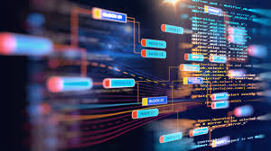
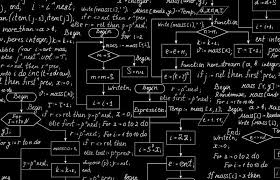
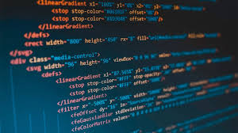

Capitolo 4
ALGORITMI

Un algoritmo è una sequenza finita di istruzioni che descrive una serie di operazioni da eseguire per risolvere un determinato problema o per ottenere un risultato specifico.
Ogni algoritmo ha alcune caratteristiche fondamentali:
- Finitudine: deve terminare dopo un numero finito di passaggi.
- Determinismo: per ogni stato, deve esserci una sola azione da compiere.
- Input: può ricevere uno o più input esterni.
- Output: produce uno o più risultati.
- Efficacia: ogni passo deve essere sufficientemente semplice da essere eseguito.
Gli algoritmi sono alla base di praticamente tutte le applicazioni moderne, dalla gestione delle risorse nei sistemi operativi alla navigazione nelle mappe,
fino all'intelligenza artificiale e al machine learning.

Esempi di Algoritmi Comuni:
Algoritmo di ordinamento: come l'algoritmo Quicksort o Mergesort, utilizzato per ordinare una lista di elementi.
Ricerca binaria: un algoritmo di ricerca efficace che trova rapidamente un elemento in una lista ordinata.
Algoritmo di Dijkstra: utilizzato per trovare il percorso più breve in un grafo.
PROGRAMMAZIONE
La programmazione è il processo di scrittura e sviluppo di istruzioni (chiamate codice)
che un computer può eseguire per svolgere compiti specifici. È alla base di tutte le applicazioni software,
dai giochi ai sistemi operativi, passando per le app e i siti web.
Fasi della programmazione
- Progettazione: Definire l'obiettivo del programma e come raggiungerlo. Si crea una struttura o un piano (come diagrammi di flusso o pseudocodice).
- Scrittura del codice: Utilizzare un linguaggio di programmazione (come Python, Java, C++, JavaScript) per scrivere le istruzioni che il computer eseguirà.
- Test e Debug: Verificare che il codice funzioni correttamente e correggere eventuali errori (bug).
- Manutenzione: Mantenere e aggiornare il software per migliorarne la funzionalità e correggere problemi.
I linguaggi di programmazione si suddividono in due categorie principali:
Linguaggi di alto livello: Più vicini al linguaggio umano, facili da leggere e scrivere (ad esempio, Python, JavaScript).
Linguaggi di basso livello: Più vicini al linguaggio macchina, adatti per operazioni più specifiche e ottimizzate (ad esempio, Assembly, C).
Tipi di programmazione
Programmazione imperativa: Scrivere istruzioni che descrivono come eseguire un'operazione (es. C, Java).
Programmazione orientata agli oggetti (OOP): Organizzare il codice in oggetti che rappresentano entità reali,
rendendo il software più modulare (es. Java, Python).
Programmazione funzionale: Trattare le funzioni come entità di primo livello, con enfasi su immutabilità e applicazione di funzioni (es. Haskell, Scala).
La programmazione è utilizzata in vari campi, tra cui:
Sviluppo web (creazione di siti e applicazioni web)
Sviluppo software (creazione di applicazioni desktop)
Intelligenza artificiale (creazione di algoritmi di machine learning)
Automazione (script per automatizzare compiti ripetitivi)
In sintesi, la programmazione è il cuore dello sviluppo tecnologico moderno e una competenza essenziale per
la creazione di software che risolvono problemi pratici e reali.
